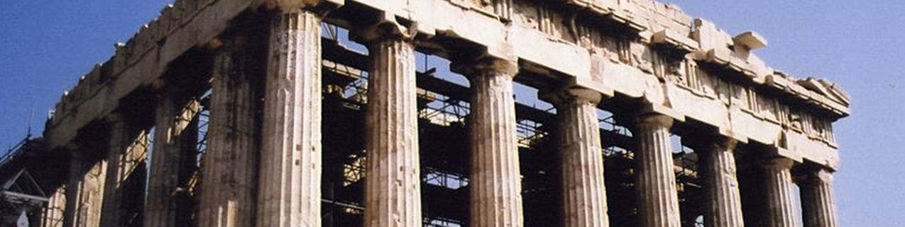

A minószi civilizáció a bronzkorban jött létre Kréta szigetén, és i. e. 2700-tól i. e. 1450-ig virágzott. A krétai volt az első fejlett civilizáció Európában, amely hatalmas, bonyolult épületkomplexumokat, lenyűgöző műalkotásokat, szerszámokat, írásrendszereket és hatalmas kereskedelmi hálózatot hagyott maga után.
A minószi civilizáció eredete, kialakulása nem ismert pontosan. Nyugat-Krétán találtak ugyan őskőkori pattintott kőeszközöket (ezek még a Würm-glaciális idejéből valók, amikor a szárazföld és Kréta szigete a tenger alacsony szintje miatt többé-kevésbé egybefüggő szárazulatot alkotott, így megkönnyítette az őskőkori vadászoknak a bejutást a szigetre).
A legelső biztos régészeti leletek az újkőkorból származnak. Ekkor hozták be a szigetre az új telepesek a fejlett neolitikus életmódot, az állattenyésztést és növénytermesztést. E telepesek valószínűleg Anatóliából érkeztek, és ők alapozták meg a későbbi krétai civilizációt, amely i. e. 2500-ban már igen magas szintre jutott.
A korai civilizáció idejére megjelentek a szabályosan tervezett városok, építőanyagként használták a téglát és a köveket, ismerték a fémművességet és a szépen kidolgozott ékszerek készítésének módját. A korai civilizáció ezután ismeretlen okból hanyatlásnak indult.
Az i. e. 2000 és i. e. 1450 közötti kort szokás aranykornak is hívni, ekkor érte el csúcsát a minószi civilizáció, amely a palotaépítésekben is megmutatkozik.
A minószi kultúra eredetére egy görög legenda vet némi fényt, Minótaurosz története. A monda szerint a krétai civilizáció megteremtője Minósz, Zeusz fia, az istenkirály volt, aki a Nap lányát, Pasziphaét vette feleségül. A királynéra bosszúból őrületet bocsátottak az istenek, amiért egy bikával közösült. Gyermekük, Minótaurosz egy szörny volt, ezért egy labirintusba zárták. Táplálékul minden évben 10 athéni ifjat és 10 athéni leányt áldoztak fel neki. A hős Thészeusz azonban megküzdött a szörnnyel és megölte, majd Ariadné fonalának segítségével kijutott a labirintusból.
A tudomány máig keresi a legenda eredetét, kutatja Minósz király valódiságát. A kultúra igen magas fokra fejlődött, de utána hanyatlásnak indult. A hanyatlás okai nem ismertek, talán újabb földrengés vagy háború okozhatta.

I. e. 2000 körül épültek meg az első nagyobb paloták. Ezek őrzik a minószi kultúra emlékeit. A legnagyobb a knósszoszi palota, melyet i. e. 1900 körül emeltek. I. e. 1700 körül újból hozzáláttak a paloták építéséhez. Ekkor jelentek meg a színes falfestmények (freskók) a házakon. A mükénéi sírokban gyakran találtak krétai eredetű ivócsészéket és fegyvereket. A leggazdagabban a tőröket díszítették, ezüsttel és fekete niellóval vonták be, a markolatot gyakran díszítették arannyal vagy drágakövekkel. Egyes tőrökön teljes jeleneteket ábrázoltak, például harcosokat, amint állatokkal küzdenek, vagy egyiptomi ihletésű vadászjelenetet, ahol macskák üldöznek egy vízimadarat.
A kultúrával együtt fejlődött a kézműipar is, amely nagy hatást gyakorolt a kereskedelemre. Megjelentek a fazekaskorongok, melyekkel a tömegtermelés megjelenése mellett a kész termékek minősége is fejlődött. Fellendült a mezőgazdaság, magas fokra fejlesztették a szőlő és az olajbogyó termesztését. Egyre több juhot tenyésztettek, így egyre több gyapjúhoz jutottak. Termékeikkel a tengeren is kereskedtek. Fejlődött az ipar, egyre több bronzot használtak, amelyekből mindennapi használati tárgyakat – evőeszközöket, különféle használati termékeket – készítettek, amelyek megkönnyítették a ház körüli munkát, hatékonyabbá tették a mezőgazdaságot. A kereskedelem is rohamos fejlődésnek indult. Modernebb társadalom képe bontakozik ki, melynek középpontjában a király állt. Megjelentek mellette az udvari előkelők, a nemesség és a gazdagok osztályai is. Mivel a fejlődés felgyorsult, a népesség száma is megnőtt. Ez megkövetelte az új kormányzati rendszerek kialakítását.
A krétai civilizáció virágzásának egyik fontos összetevője volt a tengeri kereskedelem. Ennek alapját az egyiptomiaktól átvett és továbbfejlesztett hajóépítési ismeretek biztosították, erre bizonyítékok a hajóábrázolásokon megjelenő egyiptomi jellegzetességek. Jelentős krétai újítás azonban, hogy megjelenik a döfőorr, ami csak a hajógerinc meghosszabbításaként képzelhető el. Vagyis a krétaiak az egyiptomiakkal szemben már használták a hajógerincet, mint a hajótest alapját. Erős hajóikkal virágzó kereskedelmet építettek ki és tartottak fent a Földközi-tenger keleti medencéjében, amelynek védelmére erős hadiflottát hoztak létre. A kereskedelem fejlődésével együtt telepeket is alapítottak. Már i. e. 2000 előtt települést hoztak létre Kasztrínál, Küthéra szigetén. Az i. e. 16. században krétai telepesek érkeztek Milétoszba, Rodoszra és krétaiak éltek a Kükládok több városában is (például a méloszi Phülakopiban és a keószi Ajína Iríniben). A környező szigetek és a szárazföld egyes részei a krétaiak adófizetői lehettek. Egyiptomba, a görög szárazföldre, Ciprusra és a föníciai városokba nyersanyagot, fegyvereket, textíliákat, fémvázákat, ivócsészéket, valamint finomkerámiát exportáltak; cserébe egyiptomi szövetet hoztak be.
A minószi civilizáció társadalma valószínűleg sokban különbözött az egykorú keleti kultúrákétól. A hatalmat itt nagyobbrészt nők tartották kezükben, míg a férfiak szerepe kisebb volt. A nép többi tagja egyszerű pásztorkodásból élt vagy kisebb iparral foglalkozott. A társadalomra vonatkozó ismereteink rendkívül hiányosak, mert írásuk a mai napig megfejtetlen.
Az előző feltevéseket az alapozza meg, hogy csak azok a városok voltak kiépítve (Knósszosz, Phaisztosz, Malia), melyekben a művészet magas fokra jutott, s a kereskedelem is itt zajlott. Flottáik a Mediterráneum keleti felével kereskedtek. A többi kisebb város csupán mezőváros volt vagy iparváros.
Krétán több különböző írásrendszert azonosítottak a régészek minószi korból származó leleteken, de ezek mindmáig megfejtetlenek. A legismertebb az írásrendszerek közül az i. e. 1800 és 1450 között használt lineáris A. Ez az elődje a lineáris B-nek, a legkorábbi görög nyelvű szövegek írásának. Számos kísérlet történt a lineáris A fordítására, de egyelőre nincs megegyezés az értelmezésével kapcsolatban, megfejtetlennek tekinthető. A beszélt minószi nyelv írott változatának bizonytalanul, de egyelőre a lineáris A-t tekintik. A lineáris B-vel közös szimbólumok megfelelő szótagjainak behelyettesítése értelmetlen szavakat eredményez, illetve ez a minószi nyelvet bármilyen más ismert nyelvtől eltérővé tenné. Egy feltételezés szerint a minósziak az írásukat főként csak számvitelre használták, ami – még ha meg is fejtenénk – nem sokat árulna el róluk áruk és mennyiségek leírásán kívül.
A lineáris A-t úgy egy évszázaddal megelőzték a krétai hieroglifák. Nem tudni, hogy ezekkel minószi nyelven írtak-e, az eredetük vitatott. Habár a hieroglifákat általában az egyiptomiakkal azonosítjuk, ezek a mezopotámiai írásokkal is kapcsolatot mutatnak. A krétai hieroglifákat a lineáris A előtt egy évszázaddal kezdték használni, az i. e. 18. században (MMII) párhuzamosan használták vele, de a hieroglifák az i. e. 17. században (MMIII) eltűntek.
A phaisztoszi korong egy egyedülálló képi írás. A korong eredete vitatott, de széleskörűen elfogadottan krétai. Mivel a rajta lévő írást ez az egyedül ismert lelet használja, a phaisztoszi korong megfejtetlen maradt.
A fentieken kívül ismert még öt írott lelet az i. e. 7. és 6. (de lehet, hogy csak a 3.) századból, amit Kréta keleti részén találtak. Az ezeken lévő írások régies görög ábécét használnak, de egyértelműen nem görög nyelven íródtak. Az eteokrétainak (igazi krétainak) elnevezett nyelv a kis számú lelet miatt nem ismerhető meg részletesen, és a lineáris A-tól őt elválasztó egy évezred miatt az is kétséges, leszármazottja-e a minószi nyelvnek.
A vallás nagy szerepet játszott. A vallás azonban nem a keleten ekkorra eluralkodó transzcendens teremtésközpontú, hanem természetvallás volt, középpontjában az azt megtestesítő női istenséggel.
I. e. 1500 körül a kultúra ismét romokban hevert. Ennek oka lehetett a Théra (ma Szantorini) szigetén bekövetkezett vulkánkitörés és cunami. Mások szerint lázadás állhat a középpontban, megint mások inváziót emlegetnek. Ebben az időben az égei-tengeri szigetvilág több városát is tűz emésztette el.
A minószi kultúra ennek ellenére később még egyszer felemelkedett, és rövid ideig virágzott, de nem volt már elég ereje a kibontakozáshoz. Megjelentek a szárazföld felől érkező új telepesek, az akháj hódítók, akik új írást, új kultúrát hoztak magukkal. Ezzel a krétai kultúra lehanyatlott, helyét a mükénéi kultúra vette át.
A krétai civilizáció a mezőgazdaság és az ipar fejlettségének köszönhetően magas szintre jutott. Ismerték a padlófűtést; vízvezetékeket, csatornákat és fürdőket építettek. A kultúra egyes elemeit átvették a mükénéiek közvetítésével a görögök is.